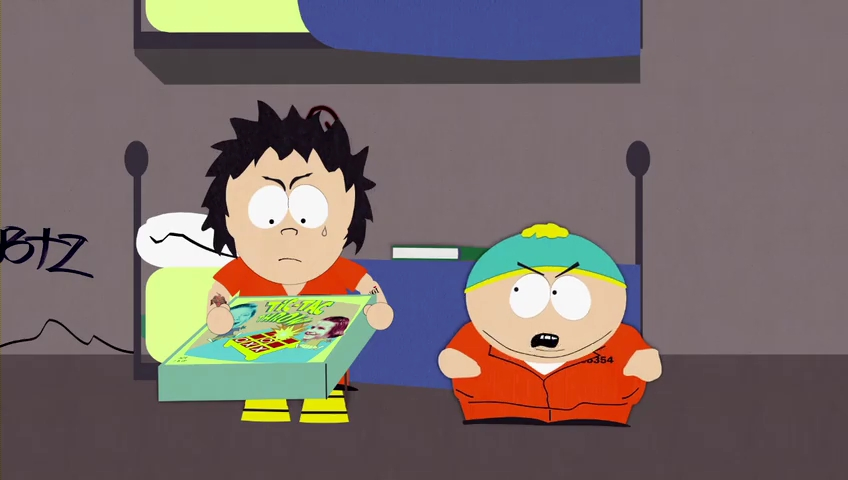
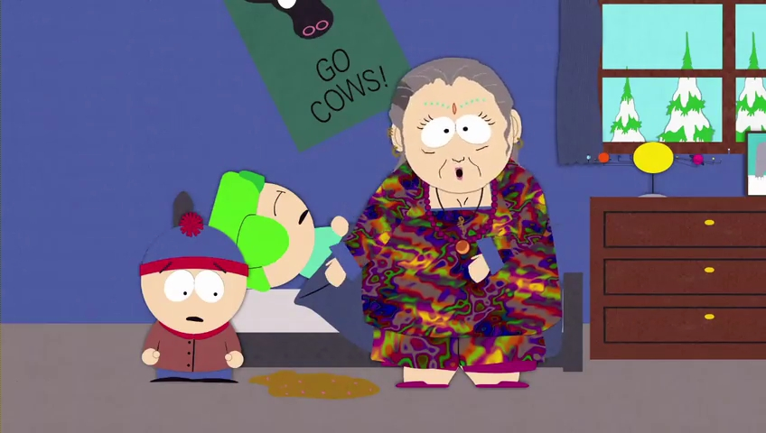
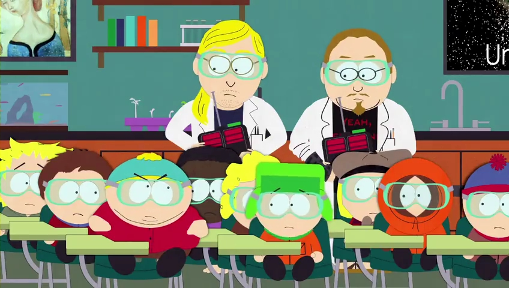
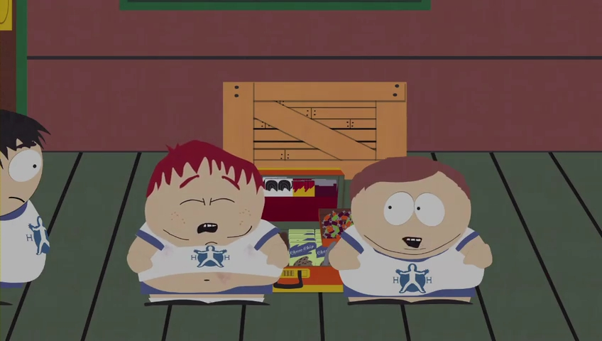

FYC://South Park s04 season 4 Complete 480p UNCENSORED WEBrip x264 mp4 NIT158
Descption:
IMDB
:
http://www.imdb.com/title/tt0121955/episodes?season=4
Video
:
[common for all episodes]
Format/Info : Advanced Video Codec (x264)
Format profile : Main@L3.1
Resolution : 848 x 480
Aspect ratio : 16:9
Frame rate mode : Constant
Frame rate : 23.976 fps
___________________________________________________________________
Episode No./ Title ...................................................... Duration ........ Bit rate
___________________________________________________________________
s04e01 - The Tooth Fairy's Tats 2000 ......................... 21mn 25s ..... 160 Kbps
s04e02 - Cartman's Silly Hate Crime 2000 .................. 21mn 23s .... 160 Kbps
s04e03 - Timmy 2000 ............................................... 21mn 25s ..... 160 Kbps
s04e04 - Quintuplets 2000 ......................................... 21mn 24s ..... 160 Kbps
s04e05 - Cartman Joins NAMBLA .............................. 21mn 29s ...... 160 Kbps
s04e06 - Cherokee Hair Tampons .............................. 21mn 24s ...... 160 Kbps
s04e07 - Chef Goes Nanners .................................... 21mn 24s ...... 160 Kbps
s04e08 - Something You Can Do with Your Finger ..... 21mn 24s ...... 180 Kbps
s04e09 - Do the Handicapped Go to Hell? ................. 21mn 24s ...... 160 Kbps
s04e10 - Probably ....................................................21mn 51s ...... 160 Kbps
s04e11 - 4th Grade ................................................. 21mn 22s ...... 160 Kbps
s04e12 - Trapper Keeper ......................................... 21mn 28s ..... 160 Kbps
s04e13 - Helen Keller! The Musical .......................... 21mn 23s ..... 160 Kbps
s04e14 - Pip (a.k.a Great Expectations) .................. 21mn 55s ..... 180 Kbps
s04e15 - Fat Camp ................................................. 21mn 23s ..... 160 Kbps
s04e16 - The Wacky Molestation Adventure ............ 21mn 24s ..... 160 Kbps
s04e17 - A Very Crappy Christmas .......................... 21mn 23s ..... 160 Kbps
____________________________________________________________________
Audio
: [common for all ep.]
Format/Info : Advanced Audio Codec
Format profile : HE-AACv2 / HE-AAC / LC
Bit rate : 32.0 Kbps
Channel(s) : 2 channels / 1 channel / 1 channel
Channel positions : Front: L R / Front: C / Front: C
Sampling rate : 48.0 KHz / 48.0 KHz / 24.0 KHz
Language : English
Subtitles
:
Type : srt ( not hard coded .. can be disabled/turned off )
Language : English
Compatibility
:
iPad 1/2/3/4/mini, iPhone4/4S/5, iPOD touch 4/5, iPod nano 7, PS3, Xbox 360, WDTV, Amazon Kindle, all Tablets, other Android devices and of course PC
Screenshots
:




And check SAMPLE for quality and compatibility.
Notes:
There is no note for this torrent